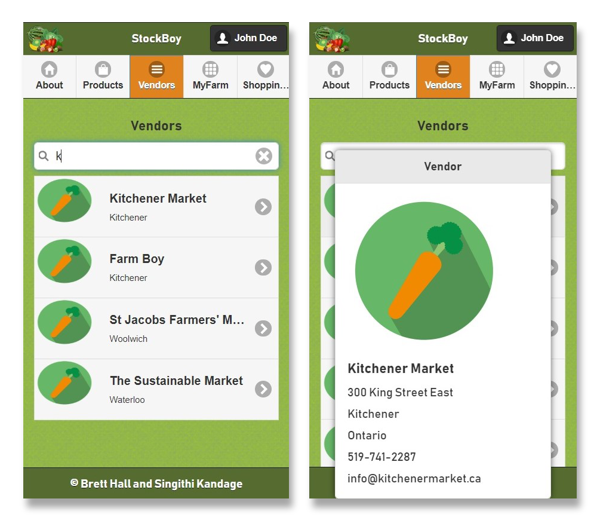
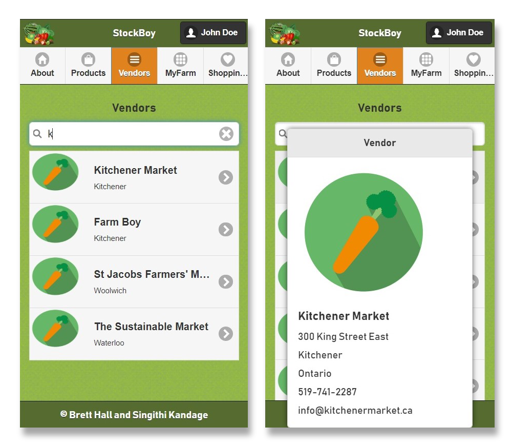

You can contact me at:
Singithi
Kandage
Hello, I'm a full stack software developer.
Find out more about me below.
`
About
Hi, I'm Singithi! A little about me...
A well-rounded and versatile software developer, and student of the Computer Programmer/ Analyst program at Conestoga College
Winner of a Bronze Medal at the 2017 Skills Ontario Web Development Competition
Proficient in object-oriented software development with languages including Python, Java, and C#/.NET framework
Well-versed in numerous client-side web technologies including HTML5, CSS3, SASS, Bootstrap, JavaScript/ES6, with an emphasis on AngularJS/Angular2 development
Significant experience in SQL and relational database concepts, having worked with RDBMS’s including SQL Server and MySQL
Building experienced with working within an Agile environment as a Software Developer Intern at Agfa HealthCare, where I develop and test services written in Python and Node.js, while employing Docker and Kubernetes for a high-availability microservices architecture.
Graduated with a Bachelor of Fine Arts (with Honors) from the Ontario College of Art and Design in 2013, from which I continue to draw my passion for clean, intuitive, and modern design
Projects


Econmobile
Utilized my skills with HTML5, CSS3, Bootstrap, and JQuery to build a prototype of an Econestoga mobile application as a hybrid app, by replicating style and flow of the original portal while improving upon its mobile responsivity.
Worked alongside my colleagues at the College’s Web Services department to leverage PhoneGap Build in converting the web application into a hybrid mobile application compatible with iPhone and Android devices
 

Stockboy
Stockboy is a functional prototype for an app which helps users find fresh, locally-grown produce. Named after an old-fashioned term for the person responsible for stocking grocery store shelves, this hybrid mobile app was created by leveraging the JQuery Mobile library and Cordova/PhoneGap, makes use of SQLite for storage, and makes use of Google's Geolocation API.
Functionality includes:
- Login and Registration pages, allowing users to distingush themselves optionally as vendors
- Products page, allowing all users to view local products, either in list view or by map view, and save them as a Shopping List
- Vendors page, allowing all users to search vendors, and their respective locations
- MyFarm page, made only available to users who are designated as vendors, allowing them to add, delete and update products
- Shopping List page, allowing all users to add, update, and delete their saved offers for the week


OEC
An ASP.NET web application based on a fictional fertilizer company. This web app makes use of Entity Framework to interface with an SQL server database. Allows a user full CRUD functionality of each of the following:
- Listing of farms
- Listing of plots (related to each farm)
- List of crops
- List of fertilizers
- List of treatments for each plot

OEC
An online store for a fictional clothing company called Freshcity. Developed with HTML5, CSS3, Bootstrap, and PHP.
Experience
Information Systems Developer Intern
Manulife Financial, Kitchener ON (January 2019 - present)
- Works within a small team to design and build an in browser IDE for developers to manage client payroll, as an update to replace an existing internal payroll utility tool
- Built and successfully deployed a sophisticated front end including an in-browser text editor, GitLab integration, job control, and generated script deployment, along with a well-organized and scalable API
- Completed and wrote thorough tests for the React front end; Participated in rigorous manual testing
- Technologies: React, Babel, SASS, Jest, Node.js, Microsoft SQL Server, Pivotal Cloud Foundry
Software Developer Intern
Agfa Healthcare, Waterloo ON (May 2018 - December 2019)
- Collaborated with the team of developers, testers, and software architect to deliver high quality, innovative software
- Managed self-directed assignments within an Agile environment to implement features and resolve software defects
- Developed and reviewed Python-based code within a microservices architecture
- Employed AngularJS and Angular2 to build a configuration tool for our system, while working with Maven, Docker, Kubernetes, and Helm as part of our DevOps pipeline
- Created build jobs in Jenkins, visualized performance and regression testing results with InfluxDB and Grafana
- Worked adeptly in a Linux environment
- Technologies: AngularJs/Angular2, Python, Java, Kubernetes, Helm, Jenkins, Maven, Grafana, InfluxDB, SVN, Linux
Web Developer
Conestoga College, Kitchener ON (2017 - 2018)
- Maintain College websites using .NET
- Create online instructional documentation to be used by Conestoga Faculty or staff
- Undertakes multiple projects under the direction of the Manager of Web Services and senior web developers, including assistance with system implementations, data migrations
- Technologies: HTML5, CSS, Javascript, .NET WFC
Awards
Manulife Innovation Challenge Winner
Manulife Financial (2019)
- Lead and worked with a small team of fellow Manulife co-op students in a proposal for the creation of an innovative insurance product aimed at post-secondary students to mitigate the loss of their tuition in the event of a mental health crisis
Bronze Medal, Web Development and Design
Skills Ontario Competition, Toronto ON, (2018)
- Within the six hours of allotted time for the competition, used knowledge of HTML5, CSS3, Javascript, PHP, MySQL databases, and Adobe Creative Suite applications to create a visually pleasing and responsive sample portfolio website
- Included administrator login, ad admin page allowing for full CRUD functionality of the database
Dean's Honour Roll
Conestoga College, Kitchener ON, (2016 - 2018)
- Awarded for exemplary academic achievement
Volunteer
Full Stack Developer
Capitol Diagnostics, Guelph ON (June 2018 - August 2018)
- Working as a developer for veterinary IT startup, Capitol Diagnostics, where I am helping create a web application for pig farmers to upload Excel spreadsheets and interpret their herd’s health via informative data visualization Employs an Angular front-end with the D3.js library for data visualization, Django for the creation of the backend REST API, and a Mongo database; uses Git for version control
- Technologies: Angular2, D3.js, Django, MongoDB, Git
Campus Ambassador - Communitech
Communitech, Kitchener ON, (2018 - present)
- Volunteers as a student representative for Communitech for Conestoga College, helping organize and setup various Communitech events
Volunteer Instructor - Go Code Girls
Conestoga College, Kitchener ON, (2017 - 2018)
- Mentored a group of girls aged 7-14 to program their first website using HTML and CSS for the Go Code Girls event at Conestoga College